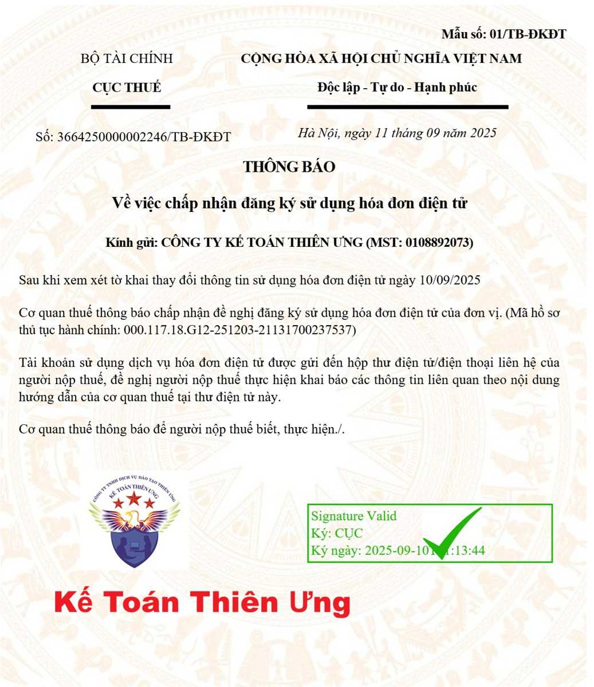
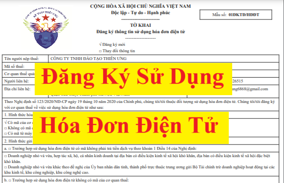

Hướng dẫn cách đăng ký sử dụng hóa đơn điện tử lần đầu với cơ quan thuế mới nhất năm 2025 và đăng ký lại khi có thay đổi nội dung trên hóa đơn điện tử đã đăng ký
Căn cứ thực hiện:
+ Trước ngày 01/06/2025: Thực hiện theo quy định tại Điều 15 của Nghị định 123/2020/NĐ-CP quy định về hoá đơn điện tử
+ Từ ngày 01/06/2025 trở đi: thực hiện theo quy định tại Khoản 11 Điều 1 Nghị định 70/2025/NĐ-CP sửa đổi, bổ sung một số điều của Nghị định số 123/2020/NĐ-CP quy định về hóa đơn, chứng từ (có hiệu lực từ ngày 01/06/2025)
Chi tiết cách đăng ký sử dụng hóa đơn điện tử từng giai đoạn như sau:
I. Cách đăng ký sử dụng hóa đơn điện tử theo Nghị định 70/2025/NĐ-CP
Thực hiện theo quy định tại Khoản 11 Điều 1 Nghị định 70/2025/NĐ-CP sửa đổi, bổ sung một số điều của Nghị định số 123/2020/NĐ-CP quy định về hóa đơn, chứng từ (có hiệu lực từ ngày 01/06/2025) như sau:
1. Doanh nghiệp, tổ chức kinh tế, tổ chức khác, hộ kinh doanh, cá nhân kinh doanh không thuộc đối tượng ngừng sử dụng hóa đơn theo quy định tại khoản 1 Điều 16 Nghị định này đăng ký sử dụng hóa đơn điện tử (bao gồm cả đăng ký hóa đơn điện tử bán tài sản công, hóa đơn điện tử bán hàng dự trữ quốc gia) thông qua tổ chức cung cấp dịch vụ hóa đơn điện tử.
Trường hợp sử dụng hóa đơn điện tử có mã của cơ quan thuế không phải trả tiền dịch vụ, cơ quan thuế hoặc cơ quan được giao nhiệm vụ tổ chức, xử lý tài sản công theo quy định pháp luật về quản lý, sử dụng tài sản công thì có thể đăng ký sử dụng hóa đơn điện tử thông qua Cổng thông tin điện tử của Tổng cục Thuế hoặc tổ chức cung cấp dịch vụ hóa đơn điện tử được Tổng cục Thuế ủy thác cung cấp dịch vụ hóa đơn điện tử có mã của cơ quan thuế không phải trả tiền dịch vụ.
Trường hợp doanh nghiệp là tổ chức kết nối chuyển dữ liệu hóa đơn điện tử theo hình thức gửi trực tiếp đến cơ quan thuế thì đăng ký sử dụng hóa đơn điện tử thông qua Cổng thông tin điện tử của Tổng cục Thuế.
Trường hợp nhà cung cấp ở nước ngoài không có cơ sở thường trú tại Việt Nam có hoạt động kinh doanh thương mại điện tử, kinh doanh dựa trên nền tảng số và các dịch vụ khác đăng ký tự nguyện sử dụng hóa đơn điện tử theo quy định tại Nghị định này thì đăng ký sử dụng hóa đơn điện tử thông qua Cổng thông tin điện tử dành cho nhà cung cấp ở nước ngoài không có cơ sở thường trú tại Việt Nam của Tổng cục Thuế.
Nội dung thông tin đăng ký theo Mẫu số 01/ĐKTĐ-HĐĐT Phụ lục IA ban hành kèm theo Nghị định này.
Chi tiết các bạn xem tại đây: Mẫu tờ khai đăng ký sử dụng hóa đơn điện tử 2025 mới nhất
Chi tiết các bạn xem tại đây: Mẫu tờ khai đăng ký sử dụng hóa đơn điện tử 2025 mới nhất
Cổng thông tin điện tử của Tổng cục Thuế gửi thông báo điện tử theo Mẫu số 01/TB-TNĐT Phụ lục IB ban hành kèm theo Nghị định này về việc tiếp nhận đăng ký sử dụng hóa đơn điện tử qua tổ chức cung cấp dịch vụ hóa đơn điện tử đối với trường hợp doanh nghiệp, tổ chức kinh tế, tổ chức khác, hộ kinh doanh, cá nhân kinh doanh đăng ký sử dụng hóa đơn điện tử thông qua tổ chức cung cấp dịch vụ hóa đơn điện tử.
Cổng thông tin điện tử của Tổng cục Thuế gửi thông báo điện tử theo Mẫu số 01/TB-TNĐT Phụ lục IB ban hành kèm theo Nghị định này về việc tiếp nhận đăng ký sử dụng hóa đơn điện tử qua địa chỉ thư điện tử đã đăng ký với cơ quan thuế đối với trường hợp doanh nghiệp, tổ chức kinh tế, tổ chức khác, hộ kinh doanh, cá nhân kinh doanh, nhà cung cấp ở nước ngoài không có cơ sở thường trú tại Việt Nam hoạt động thương mại điện tử, kinh doanh dựa trên nền tảng số và các dịch vụ khác tại Việt Nam đăng ký sử dụng hóa đơn điện tử trực tiếp tại Cổng thông tin điện tử của Tổng cục Thuế.”
1a. Trường hợp doanh nghiệp, tổ chức kinh tế, tổ chức khác, hộ kinh doanh, cá nhân kinh doanh đăng ký sử dụng hóa đơn điện tử:
a) Trong thời gian 01 ngày làm việc kể từ ngày tiếp nhận đăng ký, Cổng thông tin điện tử của Tổng cục Thuế tự động đối chiếu thông tin (bao gồm thông tin sinh trắc học theo quy định về định danh và xác thực điện tử của Chính phủ và lộ trình của cơ quan thuế) của người đại diện theo pháp luật, đại diện hộ kinh doanh, cá nhân kinh doanh, chủ doanh nghiệp tư nhân đăng ký sử dụng hóa đơn giữa dữ liệu về đăng ký doanh nghiệp, đăng ký thuế với dữ liệu tại Hệ thống Cơ sở dữ liệu quốc gia về dân cư hoặc theo dữ liệu tại Hệ thống Định danh và xác thực điện tử. Trường hợp thông tin không khớp đúng, Cổng thông tin điện tử của Tổng cục Thuế tự động gửi Thông báo không chấp nhận hồ sơ đăng ký hóa đơn điện tử và cung cấp các trường thông tin không khớp đúng cho người nộp thuế ngay trong ngày làm việc hoặc chậm nhất ngày làm việc tiếp theo để người nộp thuế điều chỉnh thông tin đã kê khai hoặc liên hệ với cơ quan công an để điều chỉnh thông tin trong Hệ thống Cơ sở dữ liệu quốc gia về dân cư hoặc Hệ thống Định danh và xác thực điện tử. Trường hợp thông tin khớp đúng, Cổng thông tin điện tử của Tổng cục Thuế tự động gửi yêu cầu đề nghị người nộp thuế xác nhận qua địa chỉ thư điện tử, số điện thoại của chủ doanh nghiệp tư nhân hoặc người đại diện pháp luật, đại diện hộ kinh doanh, cá nhân kinh doanh theo thông tin trong hồ sơ đăng ký thuế, đăng ký doanh nghiệp. Người nộp thuế có trách nhiệm trả lời xác nhận ngay trong ngày làm việc hoặc chậm nhất ngày làm việc tiếp theo; trường hợp quá thời hạn mà người nộp thuế chưa xác nhận hoặc xác nhận không thành công, Cổng thông tin điện tử của Tổng cục Thuế tự động gửi Thông báo không chấp nhận hồ sơ đăng ký hóa đơn điện tử cho người nộp thuế ngay trong ngày làm việc hoặc chậm nhất ngày làm việc tiếp theo. Cơ quan thuế áp dụng công nghệ sinh trắc học trong việc đăng ký sử dụng hóa đơn điện tử phù hợp quy định pháp luật.
b) Trường hợp người nộp thuế đã xác nhận đúng thời hạn trên Cổng thông tin điện tử của Tổng cục Thuế và người nộp thuế không thuộc trường hợp: người đại diện theo pháp luật, đại diện hộ kinh doanh, cá nhân kinh doanh, chủ doanh nghiệp tư nhân đã từng hoặc đang là người đại diện theo pháp luật, đại diện hộ kinh doanh, cá nhân kinh doanh hoặc chủ doanh nghiệp tư nhân khác mà người nộp thuế đó có trạng thái mã số thuế không hoạt động tại địa chỉ đăng ký kinh doanh, người nộp thuế ngừng hoạt động chưa đóng mã số thuế, người nộp thuế tạm ngừng hoạt động nhưng chưa hoàn thành nghĩa vụ thuế; người nộp thuế có hành vi vi phạm về thuế, hóa đơn, chứng từ theo hướng dẫn của Bộ trưởng Bộ Tài chính thì trong thời hạn chậm nhất ngày làm việc tiếp theo, cơ quan thuế ban hành Thông báo chấp nhận đăng ký sử dụng hóa đơn điện tử theo quy định tại khoản 2 Điều này.
c) Trường hợp kết quả đối chiếu thông tin khớp đúng, người nộp thuế xác nhận trên Cổng thông tin điện tử của Tổng cục Thuế đúng thời hạn nhưng người nộp thuế thuộc trường hợp người đại diện theo pháp luật, đại diện hộ kinh doanh, cá nhân kinh doanh hoặc chủ doanh nghiệp tư nhân đã từng hoặc đang là người đại diện theo pháp luật, đại diện hộ kinh doanh, cá nhân kinh doanh hoặc chủ doanh nghiệp tư nhân khác mà người nộp thuế đó có trạng thái mã số thuế không hoạt động tại địa chỉ đăng ký kinh doanh, người nộp thuế ngừng hoạt động chưa đóng mã số thuế, người nộp thuế tạm ngừng hoạt động nhưng chưa hoàn thành nghĩa vụ thuế; người nộp thuế có hành vi vi phạm về thuế, hóa đơn, chứng từ; người nộp thuế rủi ro về thuế cao theo hướng dẫn của Bộ trưởng Bộ Tài chính thì trong thời hạn 01 ngày làm việc kể từ ngày tiếp nhận đăng ký sử dụng hóa đơn điện tử của người nộp thuế, cơ quan thuế ban hành thông báo yêu cầu giải trình, bổ sung thông tin, tài liệu theo Mẫu số 01/TB-BSTT-NNT ban hành kèm theo Nghị định số 126/2020/NĐ-CP gửi cho người nộp thuế hoặc cơ quan thuế quản lý trực tiếp thực hiện xác minh hoạt động thực tế tại địa chỉ đã đăng ký của người nộp thuế theo quy định của pháp luật về quản lý thuế.
Người nộp thuế thực hiện giải trình, bổ sung thông tin, tài liệu trong thời hạn 02 ngày làm việc kể từ ngày nhận được thông báo yêu cầu giải trình, bổ sung của cơ quan thuế.
d) Trường hợp cơ quan thuế chấp nhận thông tin giải trình, bổ sung thông tin, tài liệu của người nộp thuế hoặc trường hợp kết quả xác minh người nộp thuế có hoạt động tại địa chỉ đăng ký thì cơ quan thuế quản lý trực tiếp ban hành Thông báo chấp nhận đăng ký sử dụng hóa đơn điện tử của người nộp thuế. Trường hợp người nộp thuế không giải trình hoặc quá thời hạn quy định mà không giải trình được thông tin hoặc kết quả xác minh người nộp thuế không hoạt động tại địa chỉ đăng ký thì chậm nhất ngày làm việc tiếp theo cơ quan thuế ban hành Thông báo về việc không chấp nhận đăng ký sử dụng hóa đơn điện tử của người nộp thuế và ghi rõ lý do theo quy định tại khoản 2 Điều này.”
2. Cơ quan thuế có trách nhiệm gửi thông báo điện tử theo Mẫu số 01/TB-ĐKĐT Phụ lục IB ban hành kèm theo Nghị định này qua tổ chức cung cấp dịch vụ hóa đơn điện tử hoặc gửi thông báo trực tiếp đến doanh nghiệp, tổ chức kinh tế, tổ chức khác, hộ kinh doanh, cá nhân kinh doanh về việc chấp nhận hoặc không chấp nhận đăng ký sử dụng hóa đơn điện tử.
Đối với trường hợp doanh nghiệp, tổ chức kinh tế đăng ký chuyển dữ liệu hóa đơn điện tử theo hình thức gửi trực tiếp đến cơ quan thuế theo quy định tại điểm b khoản 3 Điều 22 của Nghị định này được cơ quan thuế ra thông báo chấp nhận đăng ký sử dụng hóa đơn điện tử theo Mẫu số 01/TB-ĐKĐT Phụ lục IB ban hành kèm theo Nghị định này nhưng chưa phối hợp với Tổng cục Thuế về cấu hình hạ tầng kỹ thuật, kiểm thử kết nối, truyền nhận dữ liệu thì chậm nhất trong thời gian 05 ngày làm việc kể từ ngày cơ quan thuế gửi thông báo theo Mẫu số 01/TB-ĐKĐT Phụ lục IB ban hành kèm theo Nghị định này, tổ chức cần chuẩn bị đủ điều kiện về hạ tầng kỹ thuật và thông báo cho Tổng cục Thuế để phối hợp kết nối. Thời gian thực hiện trong 10 ngày làm việc kể từ ngày Tổng cục Thuế nhận được đề nghị của doanh nghiệp, tổ chức. Trường hợp kết quả kiểm thử kết nối, truyền nhận dữ liệu thành công thì doanh nghiệp, tổ chức thực hiện gửi dữ liệu hóa đơn điện tử theo hình thức gửi trực tiếp đến cơ quan thuế theo quy định tại Điều 22 Nghị định này. Trường hợp sau 05 ngày làm việc kể từ ngày cơ quan thuế gửi thông báo theo Mẫu số 01/TB-ĐKĐT Phụ lục IB ban hành kèm theo Nghị định này, doanh nghiệp, tổ chức không thông báo cho Tổng cục Thuế để phối hợp kết nối hoặc kết quả kiểm thử kết nối, truyền nhận dữ liệu không thành công, doanh nghiệp, tổ chức thay đổi đăng ký sử dụng hóa đơn điện tử theo Mẫu số 01/ĐKTĐ-HĐĐT Phụ lục IA ban hành kèm theo Nghị định này và thực hiện chuyển dữ liệu qua tổ chức kết nối, nhận, truyền lưu trữ dữ liệu hóa đơn điện tử với cơ quan thuế.
3. Kể từ thời điểm cơ quan thuế chấp nhận đăng ký sử dụng hóa đơn điện tử theo quy định tại Nghị định này, doanh nghiệp, tổ chức kinh tế, tổ chức khác, hộ, cá nhân kinh doanh phải ngừng sử dụng hóa đơn điện tử đã thông báo phát hành theo các quy định trước đây, tiêu hủy hóa đơn giấy đã thông báo phát hành nhưng chưa sử dụng (nếu có). Trình tự, thủ tục tiêu hủy thực hiện theo quy định tại Điều 27 Nghị định này.
3. Kể từ thời điểm cơ quan thuế chấp nhận đăng ký sử dụng hóa đơn điện tử theo quy định tại Nghị định này, doanh nghiệp, tổ chức kinh tế, tổ chức khác, hộ, cá nhân kinh doanh phải ngừng sử dụng hóa đơn điện tử đã thông báo phát hành theo các quy định trước đây, tiêu hủy hóa đơn giấy đã thông báo phát hành nhưng chưa sử dụng (nếu có). Trình tự, thủ tục tiêu hủy thực hiện theo quy định tại Điều 27 Nghị định này.
4. Trường hợp có thay đổi thông tin đã đăng ký sử dụng hóa đơn điện tử tại khoản 1 Điều này, doanh nghiệp, tổ chức kinh tế, tổ chức khác, hộ kinh doanh, cá nhân kinh doanh thực hiện thay đổi thông tin như sau:
a) Trường hợp người nộp thuế thay đổi thông tin sử dụng hóa đơn điện tử do thay đổi thông tin về người đại diện theo pháp luật; đại diện hộ kinh doanh, cá nhân kinh doanh, thành viên góp vốn, chủ sở hữu thì trình tự thủ tục thực hiện theo quy định tại khoản 1a Điều này.
b) Trường hợp người nộp thuế thay đổi thông tin sử dụng hóa đơn điện tử không thuộc quy định tại điểm a khoản này, Cổng thông tin điện tử của Tổng cục Thuế gửi yêu cầu đề nghị người nộp thuế xác nhận qua địa chỉ thư điện tử hoặc điện thoại của chủ doanh nghiệp hoặc người đại diện theo pháp luật theo thông tin trong hồ sơ đăng ký thuế.
Doanh nghiệp, tổ chức kinh tế, tổ chức khác, hộ kinh doanh, cá nhân kinh doanh sau khi thay đổi thông tin thì gửi lại cơ quan thuế thông tin đã thay đổi theo Mẫu số 01/ĐKTĐ-HĐĐT Phụ lục IA ban hành kèm theo Nghị định này qua Cổng thông tin điện tử của Tổng cục Thuế hoặc qua tổ chức cung cấp dịch vụ hóa đơn điện tử, trừ trường hợp ngừng sử dụng hóa đơn điện tử theo quy định tại khoản 1 Điều 16 Nghị định này. Cổng thông tin điện tử của Tổng cục Thuế tiếp nhận mẫu đăng ký thay đổi thông tin và cơ quan thuế thực hiện theo quy định tại khoản 2 Điều này.
c) Trường hợp công ty mẹ cần khai thác dữ liệu của các chi nhánh, đơn vị phụ thuộc thì thông báo tới cơ quan thuế quản lý trực tiếp công ty mẹ theo Mẫu số 01/ĐKTĐ-HĐĐT Phụ lục IA ban hành kèm theo Nghị định này.”

(Trên đây là Mẫu 01/TB-ĐKĐT - Thông báo về việc chấp nhận đăng ký sử dụng hóa đơn điện tử được ban hành kèm theo Nghị định số 70/2025/NĐ-CP)
Ngày 30/05/2025 Bộ Tài chính ban hành Quyết định 1913/QĐ-BTC năm 2025 công bố thủ tục hành chính trong lĩnh vực quản lý Thuế, Hải quan, trong đó có hướng dẫn thủ tục Đăng ký sử dụng hoá đơn điện tử/ Thay đổi nội dung đăng ký sử dụng hoá đơn điện tử như sau:
1. Đăng ký sử dụng hoá đơn điện tử/ Thay đổi nội dung đăng ký sử dụng hoá đơn điện tử/ Ủy nhiệm lập hóa đơn điện tử/ Chuyển đổi áp dụng hóa đơn điện tử có mã của cơ quan thuế/khai thác dữ liệu của chi nhánh, đơn vị phụ thuộc/ Thông báo tạm ngừng sử dụng hóa đơn điện tử/Tích hợp hóa đơn điện tử với biên lai thu thuế, phí, lệ phí
- Trình tự thực hiện:
Bước 1:
| Đối tượng | Thực hiện |
|
(i) Doanh nghiệp, tổ chức kinh tế, tổ chức khác, hộ kinh doanh, cá nhân kinh doanh thuộc trường hợp được sử dụng hóa đơn điện tử;
(ii) Trường hợp sử dụng hóa đơn điện tử có mã của cơ quan thuế không phải trả tiền dịch vụ;
(iii) Cơ quan thuế hoặc cơ quan được giao nhiệm vụ tổ chức, xử lý tài sản công;
(iv) doanh nghiệp là tổ chức kết nối chuyển dữ liệu hóa đơn điện tử theo hình thức gửi trực tiếp
|
thực hiện truy cập vào Cổng thông tin điện tử hoặc qua tổ chức cung cấp dịch vụ hóa đơn điện tử, để đăng ký sử dụng hoá đơn điện tử/ Thay đổi nội dung đăng ký sử dụng hoá đơn điện tử/ Ủy nhiệm lập hóa đơn điện tử/ Chuyển đổi áp dụng hóa đơn điện tử có mã của cơ quan thuế/khai thác dữ liệu của chi nhánh, đơn vị phụ thuộc/ Thông báo tạm ngừng sử dụng hóa đơn điện tử/Tích hợp hóa đơn điện tử với biên lai thu thuế, phí, lệ phí. |
| (v) Nhà cung cấp ở nước ngoài không có cơ sở thường trú tại Việt Nam có hoạt động kinh doanh thương mại điện tử, kinh doanh dựa trên nền tảng số và các dịch vụ khác. | thực hiện truy cập vào Cổng thông tin điện tử dành cho nhà cung cấp ở nước ngoài của Cục Thuế để đăng ký sử dụng hoá đơn điện tử/ Thay đổi nội dung đăng ký sử dụng hoá đơn điện tử. |
+ Trường hợp (1): Đăng ký sử dụng hoá đơn điện tử
++ Đăng ký qua tổ chức cung cấp dịch vụ hóa đơn điện tử:
Doanh nghiệp, tổ chức kinh tế, tổ chức khác, hộ kinh doanh, cá nhân kinh doanh không thuộc đối tượng ngừng sử dụng hóa đơn theo quy định tại khoản 22 Điều 1 Nghị định số 70/2025/NĐ-CP ngày 20/3/2025 (sửa đổi khoản 1 Điều 16 Nghị định số 123/2020/NĐ-CP) của Chính phủ quy định về hóa đơn, chứng từ đăng ký sử dụng hóa đơn điện tử (bao gồm cả đăng ký hóa đơn điện tử bán tài sản công, hóa đơn điện tử bán hàng dự trữ quốc gia).
++ Đăng ký qua Cổng thông tin điện tử:
Doanh nghiệp là tổ chức kết nối chuyển dữ liệu hóa đơn điện tử theo hình thức gửi trực tiếp đến cơ quan thuế thì đăng ký sử dụng hóa đơn điện tử.
+++ Đăng ký qua Cổng thông tin điện tử dành cho nhà cung cấp ở nước ngoài của Cục Thuế
Nhà cung cấp ở nước ngoài không có cơ sở thường trú tại Việt Nam có hoạt động kinh doanh thương mại điện tử, kinh doanh dựa trên nền tảng số và các dịch vụ khác.
++ Đăng ký qua Cổng thông tin điện tử hoặc tổ chức cung cấp dịch vụ hóa đơn điện tử được Cục Thuế ủy thác cung cấp dịch vụ hóa đơn điện tử có mã của cơ quan thuế không phải trả tiền dịch vụ:
Doanh nghiệp nhỏ và vừa, hợp tác xã, sử dụng hóa đơn điện tử có mã của cơ quan thuế không phải trả tiền dịch vụ theo quy định tại khoản 1 Điều 14 Nghị định số 123/2020/NĐ-CP ngày 19/10/2020 của Chính phủ, thì có thể đăng ký sử dụng hóa đơn điện tử.
Cơ quan thuế hoặc cơ quan được giao nhiệm vụ tổ chức, xử lý tài sản công;
Người nộp thuế gửi Mẫu 01/ĐKTĐ-HĐĐT Phụ lục IA ban hành kèm theo Nghị định số 70/2025/NĐ-CP
+ Trường hợp (2): Thay đổi nội dung đăng ký sử dụng hoá đơn điện tử
++Trường hợp Người nộp thuế thay đổi thông tin sử dụng hóa đơn điện tử do thay đổi thông tin về người đại diện theo pháp luật; đại diện hộ kinh doanh, cá nhân kinh doanh, thành viên góp vốn, chủ sở hữu thì trình tự thủ tục thực hiện theo trường hợp (1)
++Trường hợp Người nộp thuế thay đổi thông tin sử dụng hóa đơn điện tử khác thì Hệ thống thông tin giải quyết thủ tục hành chính của ngành thuế gửi yêu cầu đề nghị Người nộp thuế xác nhận qua địa chỉ thư điện tử hoặc điện thoại của chủ doanh nghiệp hoặc người đại diện theo pháp luật theo thông tin trong hồ sơ đăng ký thuế.
Sau đó, Người nộp thuế gửi Mẫu 01/ĐKTĐ-HĐĐT Phụ lục IA ban hành kèm theo Nghị định số 70/2025/NĐ-CP qua Hệ thống thông tin giải quyết thủ tục hành chính của ngành thuế hoặc qua tổ chức cung cấp dịch vụ hóa đơn điện tử thì Hệ thống thông tin giải quyết thủ tục hành chính của ngành thuế tiếp nhận mẫu đăng ký thay đổi thông tin và cơ quan thuế gửi thông báo chấp nhận thay đổi nội dung đăng ký sử dụng hóa đơn điện tử.
+ Trường hợp (3): Ủy nhiệm lập hóa đơn điện tử/chấm dứt trước thời hạn ủy nhiệm lập hóa đơn điện tử:
Bên thứ ba (bên nhận ủy nhiệm lập hóa đơn điện tử (HĐĐT)) là đối tượng đủ điều kiện sử dụng HĐĐT và không thuộc trường hợp ngừng sử dụng HĐĐT theo quy định tại khoản 22 Điều 1 Nghị định số 70/2025/NĐ-CP ngày 20/3/2025 (sửa đổi khoản 1 Điều 16 Nghị định số 123/2020/NĐ-CP) của Chính phủ.
Hóa đơn được ủy nhiệm cho bên thứ ba lập phải thể hiện tên đơn vị bán là bên ủy nhiệm. Việc ủy nhiệm phải được xác định bằng văn bản giữa bên ủy nhiệm và bên nhận ủy nhiệm thể hiện đầy đủ các thông tin về hóa đơn ủy nhiệm (mục đích ủy nhiệm; thời hạn ủy nhiệm; phương thức thanh toán hóa đơn ủy nhiệm) và phải thông báo cho cơ quan thuế khi đăng ký sử dụng hóa đơn điện tử. Trường hợp hóa đơn ủy nhiệm là hóa đơn điện tử không có mã của cơ quan thuế thì bên ủy nhiệm phải chuyển dữ liệu hóa đơn điện tử đến cơ quan thuế thông qua tổ chức cung cấp dịch vụ theo Mẫu số 01/ĐKTĐ-HĐĐT Phụ lục IA ban hành kèm theo Nghị định số 70/2025/NĐ-CP ngày 20/3/2025 của Chính phủ.
+ Trường hợp (4): Chuyển đổi áp dụng hóa đơn điện tử có mã của cơ quan thuế:
+ Chuyển từ sử dụng hóa đơn điện tử không có mã sang hóa đơn điện tử có mã của cơ quan thuế:
Trong thời gian mười (10) ngày làm việc kể từ ngày cơ quan thuế phát hành thông báo Mẫu số 01/TB-KTT Phụ lục IB ban hành kèm theo Nghị định số 123/2020/NĐ-CP ngày 19/10/2020 của Chính phủ về việc chuyển đổi áp dụng hóa đơn điện tử có mã của cơ quan thuế hoặc khi người nộp thuế đang sử dụng hóa đơn điện tử không có mã nếu có nhu cầu chuyển đổi áp dụng hóa đơn điện tử có mã của cơ quan thuế, phải thay đổi thông tin sử dụng hóa đơn điện tử (chuyển từ sử dụng hóa đơn điện tử không có mã sang hóa đơn điện tử có mã của cơ quan thuế), theo Mẫu số 01/ĐKTĐ-HĐĐT Phụ lục IA ban hành kèm theo Nghị định số 70/2025/NĐ-CP ngày 20/3/2025 của Chính phủ, và gửi cơ quan thuế quản lý, qua Hệ thống thông tin giải quyết thủ tục hành chính của ngành thuế hoặc qua tổ chức cung cấp dịch vụ hóa đơn điện tử.
++ Chuyển từ sử dụng hóa đơn điện tử có mã của cơ quan thuế sang hóa đơn điện tử không có mã của cơ quan thuế:
Sau 12 tháng kể từ thời điểm chuyển sang sử dụng hóa đơn điện tử có mã của cơ quan thuế, nếu người nộp thuế có nhu cầu sử dụng hóa đơn điện tử không có mã thì người nộp thuế thay đổi thông tin sử dụng hóa đơn điện tử, theo Mẫu số 01/ĐKTĐ-HĐĐT Phụ lục IA ban hành kèm theo Nghị định số 70/2025/NĐ-CP ngày 20/3/2025 của Chính phủ, và gửi cơ quan thuế quản lý, qua Hệ thống thông tin giải quyết thủ tục hành chính của ngành thuế hoặc qua tổ chức cung cấp dịch vụ hóa đơn điện tử.
+ Trường hợp (5): khai thác dữ liệu chi nhánh, đơn vị phụ thuộc:
Trường hợp Công ty mẹ cần khai thác dữ liệu của các chi nhánh, đơn vị phụ thuộc thì thông báo tới cơ quan thuế quản lý trực tiếp công ty mẹ theo Mẫu số 01/ĐKTĐ-HĐĐT Phụ lục IA ban hành kèm theo Nghị định số 70/2025/NĐCР.
+ Trường hợp (6): Thông báo tạm ngừng sử dụng hóa đơn điện tử
Trường hợp Doanh nghiệp, tổ chức kinh tế, tổ chức khác, hộ kinh doanh, cá nhân kinh doanh tạm ngừng kinh doanh hoặc tạm ngừng sử dụng hóa đơn điện tử thì gửi Mẫu 01/ĐKTĐ-HĐĐT Phụ lục IA ban hành kèm theo Nghị định số 70/2025/NĐ-CP tới có quan thuế quản lý.
+ Trường hợp (7): Tích hợp Hóa đơn điện tử với biên lai thu thuế, phí, lệ phí
Trường hợp tổ chức thu thuế, phí, lệ phí và người cung cấp dịch vụ cùng thực hiện thu thuế, phí, lệ phí và tiền bán hàng hóa, cung cấp dịch vụ của một khách hàng thì được tích hợp biên lai thu thuế, phí, lệ phí và hóa đơn trên cùng một định dạng điện tử để giao cho người mua. Hóa đơn điện tử tích hợp phải đảm bảo có đủ nội dung của hóa đơn điện tử, biên lai điện tử và theo đúng định dạng do cơ quan thuế quy định. Người bán hàng hóa, cung cấp dịch vụ và tổ chức thu thuế, phí, lệ phí có trách nhiệm thỏa thuận về đơn vị chịu trách nhiệm lập hóa đơn điện tử tích hợp cho khách hàng và phải thông báo đến cơ quan thuế quản lý trực tiếp theo Mẫu số 01/ĐKTĐ-HĐĐT Phụ lục IA ban hành kèm theo Nghị định số 70/2025/NĐ-CP
Bước 2: Người nộp thuế ký và gửi đến cơ quan thuế quản lý qua Hệ thống thông tin giải quyết thủ tục hành chính của ngành thuế hoặc qua tổ chức cung cấp dịch vụ hóa đơn điện tử, hoặc Cổng thông tin điện tử dành cho nhà cung cấp ở nước ngoài không có cơ sở thường trú tại Việt Nam của Cục Thuế.
Bước 3: Cục Thuế tiếp nhận hồ sơ theo Mẫu số 01/TB-TNĐT Phụ lục IB ban hành kèm theo Nghị định số 70/2025/NĐ-CP ngày 20/3/2025 của Chính phủ qua Hệ thống thông tin giải quyết thủ tục hành chính của ngành thuế hoặc qua tổ chức cung cấp dịch vụ hóa đơn điện tử, hoặc Cổng thông tin điện tử dành cho nhà cung cấp ở nước ngoài không có cơ sở thường trú tại Việt Nam của Cục Thuế thực hiện kiểm tra, giải quyết hồ sơ thông qua hệ thống xử lý dữ liệu điện tử của cơ quan thuế và trả thông báo trực tiếp theo Mẫu số Thông báo số 01/TB-ĐKĐT Phụ lục IB ban hành kèm theo Nghị định số 70/2025/NĐ-CP ngày 20/3/2025.
- Cách thức thực hiện: Bằng phương thức điện tử qua Hệ thống thông tin giải quyết thủ tục hành chính của ngành thuế hoặc qua tổ chức cung cấp dịch vụ hoá đơn điện tử, hoặc Cổng thông tin điện tử dành cho nhà cung cấp ở nước ngoài không có cơ sở thường trú tại Việt Nam của Cục Thuế.
- Thành phần, số lượng hồ sơ:
+ Thành phần hồ sơ, gồm: Tờ khai đăng ký/ Thay đổi thông tin sử dụng hoá đơn điện tử theo Mẫu số 01ĐKTĐ/HĐĐT Phụ lục IA kèm theo Nghị định số 70/2025/NĐ-CP ngày 20/3/2025 của Chính phủ.
+ Số lượng hồ sơ: 01 (bộ).
- Thời hạn giải quyết:
+Trường hợp (1) và trường hợp (2) về thay đổi thông tin của người đại diện theo pháp luật, đại diện hộ kinh doanh, cá nhân kinh doanh, chủ doanh nghiệp tư nhân:
++ Doanh nghiệp, tổ chức kinh tế, tổ chức khác, hộ, cá nhân kinh doanh, lập hồ sơ, khai đầy đủ thông tin theo Mẫu số 01/ĐKTĐ-HĐĐT Phụ lục IA ban hành kèm theo Nghị định số 70/2025/NĐ-CP ngày 20/3/2025 của Chính phủ và gửi đến Cơ quan thuế.
Trong vòng 01 ngày làm việc kể từ ngày tiếp nhận đăng ký, Cổng thông tin điện tử tự động đối chiếu thông tin của người đại diện theo pháp luật, đại diện hộ kinh doanh, cá nhân kinh doanh, chủ doanh nghiệp tư nhân giữ dữ liệu về đăng ký doanh nghiệp, đăng ký thuế với dữ liệu tại Hệ thống Định danh và xác thực điện tử là khớp đúng, Hệ thống thông tin giải quyết thủ tục hành chính của ngành thuế tự động gửi yêu cầu đề nghị người nộp thuế xác nhận qua địa chỉ thư điện tử, số điện thoại của chủ doanh nghiệp tư nhân hoặc người đại diện pháp luật, đại diện hộ kinh doanh, cá nhân kinh doanh.
Người nộp thuế có trách nhiệm xác nhận ngay trong ngày làm việc hoặc chậm nhất ngày làm việc tiếp theo:
+++Trường hợp người nộp thuế chưa xác nhận hoặc xác nhận không thành công: Hệ thống thông tin giải quyết thủ tục hành chính của ngành thuế tự động gửi Thông báo không chấp nhận hồ sơ đăng ký hóa đơn điện tử cho người nộp thuế ngay trong ngày làm việc hoặc chậm nhất ngày làm việc tiếp theo.
+++ Trường hợp Người nộp thuế đã xác nhận đúng thời hạn và Người nộp thuế không thuộc trường hợp người đại diện theo pháp luật, đại diện hộ kinh doanh, cá nhân kinh doanh, chủ doanh nghiệp tư nhân đã từng hoặc đang là người đại diện theo pháp luật, đại diện hộ kinh doanh, cá nhân kinh doanh hoặc chủ doanh nghiệp tư nhân khác mà Người nộp thuế đó trạng thái mã số thuế không hoạt động tại địa chỉ đăng ký kinh doanh, Người nộp thuế ngừng hoạt động chưa đóng mã số thuế, Người nộp thuế tạm ngừng hoạt động nhưng chưa hoàn thành nghĩa vụ thuế; Người nộp thuế có hành vi vi phạm về thuế, hóa đơn, chứng từ thì chậm nhất ngày làm việc tiếp theo, cơ quan thuế ban hành Thông báo chấp nhận đăng ký sử dụng HĐĐТ.
+++ Trường hợp Người nộp thuế đã xác nhận đúng thời hạn và Người nộp thuế thuộc trường hợp người đại diện theo pháp luật, đại diện hộ kinh doanh, cá nhân kinh doanh, chủ doanh nghiệp tư nhân đã từng hoặc đang là người đại diện theo pháp luật, đại diện hộ kinh doanh, cá nhân kinh doanh hoặc chủ doanh nghiệp tư nhân khác mà Người nộp thuế đó trạng thái mã số thuế không hoạt động tại địa chỉ đăng ký kinh doanh, Người nộp thuế ngừng hoạt động chưa đóng mã số thuế, Người nộp thuế tạm ngừng hoạt động nhưng chưa hoàn thành nghĩa vụ thuế; Người nộp thuế có hành vi vi phạm về thuế, hóa đơn, chứng từ, người nộp thuế rủi ro về thuế cao thì trong thời hạn 01 ngày làm việc kể từ ngày tiếp nhận đăng ký sử dụng hóa đơn điện tử của Người nộp thuế, cơ quan thuế ban hành thông báo yêu cầu giải trình, bổ sung thông tin, tài liệu theo Mẫu số 01/TB-BSTT-NNT ban hành kèm theo Nghị định số 126/2020/NĐ-CP hoặc cơ quan thuế quản lý trực tiếp thực hiện xác minh hoạt động thực tế tại địa chỉ đã đăng ký. Trường hợp cơ quan thuế chấp nhận thông tin giải trình, bổ sung hoặc kết quả xác minh Người nộp thuế có hoạt động tại địa chỉ đăng ký thì cơ quan thuế quản lý trực tiếp ban hành Thông báo chấp nhận đăng ký sử dụng hóa đơn điện tử của Người nộp thuế. Trường hợp Người nộp thuế không giải trình hoặc quá thời hạn quy định mà không giải trình được thông tin hoặc kết quả xác minh Người nộp thuế không hoạt động tại địa chỉ đăng ký thì chậm nhất ngày làm việc tiếp theo cơ quan thuế thông báo về việc không chấp nhận đăng ký sử dụng hóa đơn điện tử của Người nộp thuế
++ Đối với cơ quan thuế hoặc cơ quan được giao nhiệm vụ tổ chức, xử lý tài sản công theo quy định, nhà cung cấp ở nước ngoài không có cơ sở thường trú tại Việt Nam có hoạt động kinh doanh thương mại điện tử, kinh doanh dựa trên nền tảng số và các dịch vụ khác lập hồ sơ, khai đầy đủ thông tin theo Mẫu số 01/ĐKTĐ-HĐĐT Phụ lục IA ban hành kèm theo Nghị định số 70/2025/NĐ-CP ngày 20/3/2025 của Chính phủ và gửi đến Cơ quan thuế quản lý (Cục thuế/Chi cục thuế), Hệ thống thông tin giải quyết thủ tục hành chính của ngành thuế gửi thông báo điện tử theo Mẫu số 01/TB-TNĐT Phụ lục IB ban hành kèm theo Nghị định số 70/2025/NĐ-CP về việc tiếp nhận đăng ký sử dụng hóa đơn điện tử qua địa chỉ thư điện tử đã đăng ký với cơ quan thuế trực tiếp tại Hệ thống thông tin giải quyết thủ tục hành chính của ngành thuế hoặc qua tổ chức cung cấp dịch vụ hóa đơn điện tử.
+ Trường hợp (2) các thay đổi về thông tin sử dụng hóa đơn điện tử khác, Hệ thống thông tin giải quyết thủ tục hành chính của ngành thuế gửi yêu cầu đề nghị NNT xác nhận qua địa chỉ thư điện tử hoặc điện thoại của chủ doanh nghiệp hoặc người đại diện theo pháp luật theo thông tin trong hồ sơ đăng ký thuế trong vòng 01 ngày kể từ ngày nhận được đăng ký.
+ Trường hợp (3), (4), (5), (6) và (7) Cơ quan thuế trả Thông báo việc tiếp nhận không tiếp nhận tờ khai đăng ký/thay đổi thông tin sử dụng hóa đơn điện tử/chứng từ điện tử trong vòng 01 ngày kể từ ngày nhận được đăng ký.
- Đối tượng thực hiện thủ tục hành chính: Doanh nghiệp; tổ chức kinh tế, tổ chức khác; hộ kinh doanh, cá nhân kinh doanh; Cơ quan thuế hoặc cơ quan được giao nhiệm vụ tổ chức, xử lý tài sản công; Nhà cung cấp ở nước ngoài không có cơ sở thường trú tại Việt Nam có hoạt động kinh doanh thương mại điện tử, kinh doanh dựa trên nền tảng số và các dịch vụ khác.
- Cơ quan giải quyết thủ tục hành chính:
Trường hợp Hệ thống thông tin giải quyết thủ tục hành chính của ngành thuế trả tự động thì cơ quan thuế giải quyết thủ tục hành chính: Cục Thuế.
Cơ quan thuế quản lý trực tiếp: Chi cục Thuế/ Đội Thuế cấp huyện
- Kết quả thực hiện thủ tục hành chính:
++ Thông báo số 01/TB-TNĐT về việc tiếp nhận/không tiếp nhận <tờ khai đăng ký/thay đổi thông tin sử dụng hóa đơn điện tử/chứng từ điện tử
++ Thông báo số 01/TB-ĐKĐT về việc chấp nhận/không chấp nhận đăng ký/thay đổi thông tin sử dụng hóa đơn điện tử/chứng từ điện tử
- Phí, lệ phí: Không.
- Tên mẫu đơn, mẫu tờ khai: Mẫu số 01/ĐKTĐ-HĐĐT Tờ khai đăng ký/Thay đổi nội dung đăng ký sử dụng hoá đơn điện tử
- Yêu cầu, điều kiện thực hiện thủ tục hành chính:
Đảm bảo cơ sở hạ tầng CNTT để gửi dữ liệu tới cơ quan thuế bằng phương thức điện tử
- Căn cứ pháp lý của thủ tục hành chính:

+ Khoản 3, khoản 10, khoản 11, khoản 12 Điều 1 Nghị định số 70/2025/NĐ-CP ngày 20/3/2025 của Chính phủ quy định về hóa đơn, chứng từ.
+ Nghị định số 123/2020/NĐ-CP ngày 19/10/2020 của Chính phủ.
Kế Toán Diệu Tâm mời các bạn tham khảo thêm:
================
Quyết định số 2799/ QĐ-CT ngày 6/8/2025 của Cục Thuế về việc ban hành Quy trình quản lý hóa đơn điện tử, chứng từ điện tử
Mục 1.
TIẾP NHẬN, XỬ LÝ ĐĂNG KÝ SỬ DỤNG
HÓA ĐƠN ĐIỆN TỬ, CHỨNG TỪ ĐIỆN TỬ
Điều 7. Quản lý thông tin đăng ký/thay đổi sử dụng hóa đơn điện tử
1. Tiếp nhận và xử lý Tờ khai đăng ký/thay đổi thông tin sử dụng HĐĐT của NNT (Mẫu số 01/ĐKTĐ-HĐĐT)
Bước 1.
Trong thời gian 15 phút kể từ khi nhận được Tờ khai Mẫu số 01/ĐKTĐ-HĐĐT theo Nghị định số 70/2025/NĐ-CP của NNT, Cổng thông tin HĐĐT- CTĐT tự động đối chiếu các thông tin cơ bản trên Tờ khai Mẫu số 01/ĐKTĐ-HĐĐT, bao gồm:
- CQT quản lý trên tờ khai đăng ký sử dụng HĐĐT đúng với cơ quan quản lý thuế trên phân hệ đăng ký thuế của Hệ thống TMS.
- Mã số thuế có trạng thái 00.
- Hệ thống tự động kiểm tra loại hóa đơn đăng ký sử dụng phù hợp với phương pháp tính thuế của NNT.
- Các chỉ tiêu trên Mẫu số 01/ĐKTĐ-HĐĐT đúng chuẩn dữ liệu.
- Chữ ký số của NNT theo đúng quy định của Bộ Khoa học và Công nghệ.
- Kiểm tra các thông tin của người đại diện theo pháp luật trên cổng thông tin Bộ Công an/thông tin đăng ký thuế trên TMS bao gồm: Tên NNT; Số CC/CCCD/số định danh/Hộ chiếu; Ngày tháng năm sinh; Giới tính.
- NNT không thuộc trường hợp ngừng sử dụng HĐĐT theo quy định tại khoản 12 Điều 1 Nghị định số 70/2025/NĐ-CP.
- NNT đăng ký hình thức gửi dữ liệu và phương thức chuyển dữ liệu HĐĐT phải phù hợp với hình thức hóa đơn đã lựa chọn.
- NNT đăng ký sử dụng HĐĐT “Có mã của CQT” và chọn hình thức gửi dữ liệu là “Trường hợp sử dụng HĐĐT có mã không phải trả tiền dịch vụ” phải đáp ứng điều kiện quy định tại khoản 1 Điều 14 Nghị định số 123/2020/NĐ-CP (đã được sửa đổi, bổ sung tại khoản 11 Điều 1 Nghị định 70/2025/NĐ-CP), khoản 1 Điều 15 Nghị định 123/2020/NĐ-CP (đã được sửa đổi bổ sung tại khoản 11 Điều 1 Nghị định 70/2025/NĐ-CP).
- Kiểm tra thông tin đề nghị tạm ngừng sử dụng HĐĐT:
+ Tên NNT đề nghị.
+ Thời gian tạm ngừng sử dụng HĐĐT: kiểm tra thời gian của việc tạm ngừng.
+ Tổ chức cung cấp giải pháp HĐĐT thuộc danh sách tổ chức cung cấp giải pháp HĐĐT được công khai trên Cổng thông tin điện tử của Cục Thuế.
+ Kiểm tra số seri chứng thư đã đăng ký.
- Kiểm tra thông tin của tổ chức cung cấp dịch vụ mà NNT kê khai trên tờ khai có thuộc danh sách tổ chức cung cấp dịch vụ HĐĐT đáp ứng điều kiện theo quy định như:
+ Tên tổ chức cung cấp dịch vụ.
+ Mã số thuế ở trạng thái 00, 02.
Trường hợp NNT gửi Tờ khai Mẫu số 01/ĐKTĐ-HĐĐT qua tổ chức truyền nhận, Cổng thông tin HĐĐT-CTĐT tự động đối chiếu thêm các thông tin đối với tổ chức truyền nhận theo hướng dẫn tại điểm b khoản 2 Điều 6 Quy trình này. Cụ thể:
- Kiểm tra thông tin của đơn vị truyền nhận mà NNT kê khai trên tờ khai có thuộc danh sách tổ chức truyền nhận đáp ứng điều kiện theo quy định:
+ Tên đơn vị truyền nhận.
+ Mã số thuế ở trạng thái 00, 02.
+ Thời gian cung cấp truyền nhận: kiểm tra thời gian hiệu lực của hợp đồng.
- Kiểm tra thông tin đăng ký tích hợp HĐĐT với CTĐT:
+ MST của tổ chức được tích hợp/nhận tích hợp có trạng thái 00.
+ Thực hiện kiểm tra tổ chức được hoặc nhận tích hợp đã được chấp nhận đăng ký sử dụng HĐĐT, BLĐT.
+ NNT đăng ký loại hóa đơn sử dụng là “Hóa đơn GTGT tích hợp biên lai thu thuế, phí, lệ phí”; “Hóa đơn bán hàng tích hợp biên lai thu thuế, phí, lệ phí” hoặc đồng thời cả hai loại hóa đơn trên.
+ Tên loại hóa đơn tích hợp: “Hóa đơn GTGT tích hợp biên lai thu thuế, phí, lệ phí”; “Hóa đơn bán hàng tích hợp biên lai thu thuế, phí, lệ phí” hoặc đồng thời cả hai loại hóa đơn trên.
+ Kí hiệu mẫu hóa đơn tích hợp, kí hiệu hóa đơn tích hợp: chuẩn kí tự theo quy định tại khoản 1 Điều 5 Thông số 32/2025/TT-BTC.
+ Thời hạn tích hợp: kiểm tra thời hạn của việc tích hợp.
Căn cứ kết quả đối chiếu, Cổng thông tin HĐĐT-CTĐT tự động tạo thông báo tiếp nhận/không tiếp nhận theo Mẫu số 01/TB-TNĐT ban hành theo Nghị định 70/2025/NĐ-CP, ký và gửi NNT theo quy định tại điểm b khoản 4 Điều 6 Quy trình này.
Bước 2.
Trong thời gian 01 ngày làm việc kể từ ngày Cổng thông tin HĐĐT-CTĐT gửi thông báo về việc tiếp nhận Mẫu số 01/TB-TNĐT (Bước 1):
Hệ thống HĐĐT-CTĐT tự động đối chiếu các nội dung thông tin trên Mẫu số 01/ĐKTĐ-HĐĐT (theo hướng dẫn tại bước này) gồm:
- NNT được đăng ký hình thức HĐĐT là “Không có mã của CQT” hoặc đồng thời cả hai/ba hình thức “Có mã của CQT” và “Không có mã của CQT”; hoặc “Hóa đơn khởi tạo từ máy tính tiền” theo quy định tại khoản 1, khoản 2 Điều 91 Luật Quản lý thuế nếu NNT không thuộc danh sách NNT sử dụng HĐĐT có mã của CQT.
- NNT có ngành nghề kinh doanh thuộc đối tượng sử dụng HĐĐT khởi tạo từ MTT theo quy định tại điểm 1 Điều 11 Nghị định 123/2020/NĐ-CP được sửa đổi, bổ sung tại khoản 8 Điều 1 Nghị định 70/2025/NĐ-CP.
- NNT không thuộc trường hợp ngừng sử dụng HĐĐT theo quy định tại khoản 1, khoản 2 Điều 16 Nghị định 123/2020/NĐ-CP (được sửa đổi, bổ sung theo quy định tại khoản 12 Điều 1 Nghị định 70/2025/NĐ-CP).
- Kiểm tra thông tin đơn vị hạch toán phụ thuộc NNT kê khai trên tờ khai với hệ thống đăng ký thuế:
+ Kiểm tra thông tin đơn vị hạch toán phụ thuộc đã được NNT đăng ký là đơn vị trực thuộc theo thông tin đăng ký thuế, trong trường hợp đơn vị hạch toán phụ thuộc có mã số thuế 13 số, kiểm tra 10 số đầu trùng với mã số thuế của NNT đang gửi tờ khai đăng ký/thay đổi thông tin sử dụng HĐĐT.
+ Kiểm tra hình thức hạch toán của NNT được cấp quyền tra cứu.
+ Thời gian được cấp quyền tra cứu: kiểm tra thời gian của việc tra cứu hóa đơn.
Căn cứ kết quả đối chiếu bước 2, Hệ thống HĐĐT-CTĐT tự động tạo thông báo, ký nhân danh CQT về việc không chấp nhận đăng ký/thay đổi thông tin sử dụng HĐĐT (Mẫu số 01/TB-ĐKĐT) gửi NNT theo quy định tại điểm b khoản 4 Điều 6 Quy trình này trong trường hợp kết quả đối chiếu cho thấy thông tin NNT kê khai trên Mẫu số 01/ĐKTĐ-HĐĐT không khớp đúng với thông tin của NNT trên các ứng dụng quản lý thuế.
Bước 3. Xác nhận thông tin đăng ký hoặc thay đổi của NNT, tự động kiểm tra đối chiếu thông tin người đại diện pháp luật.
Cổng thông tin HĐĐT-CTĐT yêu cầu NNT thực hiện xác thực sinh trắc học bằng nhận diện khuôn mặt thông qua ứng dụng Etax mobile, đồng thời tự động gửi mã xác thực OTP yêu cầu NNT xác thực qua địa chỉ thư điện tử, số điện thoại theo quy định tại Điều 15 Nghị định 123/2020/NĐ-CP (được sửa đổi, bổ sung theo quy định tại điểm b khoản 11 Điều 1 Nghị định số 70/2025/NĐ-CP).
- Trường hợp quá thời hạn mà NNT chưa xác thực hoặc xác thực không thành công, Cổng thông tin HĐĐT-CTĐT tự động tạo Thông báo, ký nhân danh CQT về việc không chấp nhận hồ sơ đăng ký/thay đổi thông tin đăng ký sử dụng HĐĐT theo Mẫu số 01/TB-ĐKĐT gửi NNT, thông báo nội dung thông tin không khớp đúng cho NNT ngay trong ngày làm việc hoặc chậm nhất ngày làm việc tiếp theo để NNT thực hiện cập nhật, điều chỉnh thông tin này với hệ thống cơ sở dữ liệu quốc gia về dân cư hoặc hệ thống định danh và xác thực điện tử.
- Trong trường hợp NNT xác thực đúng thời hạn, Hệ thống HĐĐT-CTĐT tự động đối chiếu các thông tin theo quy định tại điểm b khoản 11 Điều 1 Nghị định 70/2025/NĐ-CP. Cụ thể: Hệ thống HĐĐT-CTĐT thực hiện đối chiếu thông tin đăng ký sử dụng HĐĐT với thông tin đồng bộ từ các ứng dụng quản lý thuế, ứng dụng QLRR theo bộ tiêu chí đánh giá, xác định NNT có dấu hiệu rủi ro theo hướng dẫn của Bộ trưởng Bộ Tài chính đối với người đại diện theo pháp luật, đại diện hộ kinh doanh, cá nhân kinh doanh hoặc chủ doanh nghiệp tư nhân đã từng hoặc đang là người đại diện theo pháp luật, đại diện hộ kinh doanh, cá nhân kinh doanh hoặc chủ doanh nghiệp tư nhân khác mà NNT đó có trạng thái mã số thuế không hoạt động tại địa chỉ đăng ký kinh doanh, NNT ngừng hoạt động chưa đóng mã số thuế, NNT tạm ngừng hoạt động nhưng chưa hoàn thành nghĩa vụ thuế; NNT có hành vi vi phạm về thuế, hóa đơn, chứng từ; NNT rủi ro về thuế cao theo quy định tại Điều 9 Thông tư số 32/2025/TT-BTC hướng dẫn Nghị định số 70/2025/NĐ-CP.
+ NNT không thuộc trường hợp quy định tại Điều 15 Nghị định 123/2020/NĐ-CP (được sửa đổi, bổ sung theo quy định tại điểm b khoản 11 Điều 1 Nghị định số 70/2025/NĐ-CP) thì Hệ thống HĐĐT-CTĐT tự động gửi Thông báo chấp nhận đăng ký/thay đổi sử dụng HĐĐT theo Mẫu số 01/TB-ĐKĐT đến địa chỉ thư điện tử và tài khoản Etax mobie của NNT.
+ NNT thuộc trường hợp quy định tại Điều 15 Nghị định 123/2020/NĐ-CP (được sửa đổi, bổ sung theo quy định tại điểm b khoản 11 Điều 1 Nghị định số 70/2025/NĐ-CP) thì trong thời hạn 01 ngày làm việc kể từ ngày tiếp nhận đăng ký sử dụng HĐĐT của NNT, Hệ thống HĐĐT-CTĐT tự động tạo Thông báo giải trình bổ sung thông tin tài liệu Mẫu số 01/TB-BSTT-NNT ban hành kèm theo Nghị định số 126/2020/NĐ-CP. Công chức bộ phận Quản lý sử dụng thực hiện rà soát trình phụ trách bộ phận duyệt, trình Thủ trưởng CQT ký ban hành theo quy định tại điểm a khoản 4 Điều 6 Quy trình này gửi cho NNT thông qua Cổng thông tin HĐĐT-CTĐT hoặc CQT quản lý trực tiếp thực hiện xác minh hoạt động thực tế tại địa chỉ đã đăng ký của NNT theo quy định của pháp luật về quản lý thuế và quy trình quy định về trình tự thủ tục xác minh tình trạng hoạt động, thông báo công khai thông tin, xử lý và khôi phục mã số thuế đối với NNT không hoạt động tại địa chỉ đã đăng ký với CQT.
NNT thực hiện giải trình, bổ sung thông tin, tài liệu trong thời hạn 02 ngày làm việc kể từ ngày nhận được thông báo yêu cầu giải trình, bổ sung của CQT.
++ Trường hợp CQT chấp nhận giải trình, bổ sung thông tin, tài liệu của NNT hoặc trường hợp kết quả xác minh NNT có hoạt động tại địa chỉ đăng ký thì chậm nhất ngày làm việc tiếp theo, công chức bộ phận Quản lý sử dụng trình phụ trách bộ phận, trình Thủ trưởng CQT phê duyệt, ký ban hành thông báo chấp nhận đăng ký sử dụng HĐĐT theo Mẫu số 01/TB-ĐKĐT để Hệ thống HĐĐT-CTĐT gửi NNT theo quy định tại điểm a khoản 4 Điều 6 Quy trình này.
++ Trường hợp NNT không giải trình hoặc quá thời hạn quy định mà không giải trình được thông tin hoặc kết quả xác minh NNT không hoạt động tại địa chỉ đăng ký thì chậm nhất ngày làm việc tiếp theo, công chức bộ phận Quản lý sử dụng trình phụ trách bộ phận, trình Thủ trưởng CQT phê duyệt, ký ban hành thông báo không chấp nhận đăng ký sử dụng HĐĐT theo Mẫu số 01/TB-ĐKĐT để Hệ thống HĐĐT-CTĐT gửi NNT theo quy định tại điểm a khoản 4 Điều 6 Quy trình này.
2. Tiếp nhận và xử lý tờ khai đăng ký/thay đổi thông tin sử dụng HĐĐT trong trường hợp ủy nhiệm/nhận ủy nhiệm lập HĐĐT
Bước 1.
Trong thời gian 15 phút kể từ khi nhận được tờ khai đăng ký/thay đổi thông tin sử dụng HĐĐT có nội dung về ủy nhiệm/nhận ủy nhiệm lập hóa đơn (mục 5, 6 Mẫu số 01 /ĐKTĐ-HĐĐT theo Nghị định số 70/2025/NĐ-CP), Cổng thông tin HĐĐT-CTĐT tự động đối chiếu thông tin đăng ký của NNT gồm:
- Mã số thuế phải có trạng thái đang hoạt động (trạng thái 00).
- CQT quản lý trên tờ khai đăng ký sử dụng HĐĐT đúng với cơ quan quản lý thuế trên phân hệ đăng ký thuế của Hệ thống TMS.
- Chữ ký số của NNT theo đúng quy định của Bộ Khoa học và Công nghệ.
- NNT không thuộc trường hợp ngừng sử dụng HĐĐT theo khoản 12 Điều 1 Nghị định số 70/2025/NĐ-CP.
- Các chỉ tiêu liên quan đến việc đăng ký ủy nhiệm lập hóa đơn trên Mẫu số 01/ĐKTĐ-HĐĐT đúng chuẩn dữ liệu.
- Kiểm tra các thông tin người đại diện pháp luật với thông tin đăng ký thuế trên TMS bao gồm: tên NNT, số CC/CCCD/Số định danh/Hộ chiếu, Ngày sinh, Giới tính.
Trường hợp NNT gửi Tờ khai Mẫu số 01/ĐKTĐ-HĐĐT qua tổ chức truyền nhận, Cổng thông tin HĐĐT-CTĐT tự động đối chiếu thêm các thông tin đối với tổ chức truyền nhận theo hướng dẫn tại điểm b khoản 2 Điều 6 Quy trình này.
Căn cứ kết quả đối chiếu, Cổng thông tin HĐĐT-CTĐT tự động tạo thông báo tiếp nhận/không tiếp nhận theo Mẫu số 01/TB-TNĐT, ký và gửi NNT theo quy định tại điểm b khoản 4 Điều 6 Quy trình này.
Bước 2.
Trong thời gian 01 ngày làm việc kể từ ngày Cổng thông tin HĐĐT-CTĐT gửi thông báo về việc tiếp nhận Mẫu số 01/TB-TNĐT, Hệ thống HĐĐT-CTĐT tự động đối chiếu các nội dung thông tin trên Mẫu số 01/ĐKTĐ-HĐĐT (theo hướng dẫn tại bước này) gồm:
- Việc ủy nhiệm sử dụng hóa đơn phải phù hợp với hình thức hóa đơn và loại hóa đơn NNT đăng ký sử dụng.
- Cổng thông tin HĐĐT-CTĐT tự động đối chiếu thông tin của bên ủy nhiệm và bên nhận ủy nhiệm trên tờ khai Mẫu số 01/TB-ĐKĐT. Trường hợp, đối với việc đăng ký ủy nhiệm lập hóa đơn của NNT hoạt động kinh doanh trên sàn thương mại điện tử, Hệ thống HĐĐT-CTĐT đối chiếu thông tin NNT với danh sách sàn thương mại điện tử đáp ứng điều kiện nhận ủy nhiệm xuất hóa đơn thay NNT theo điều 17 Quy trình này.
Bước 3. Ban hành Thông báo theo Mẫu số 01/TB-ĐKĐT.
Trong thời gian 01 ngày làm việc kể từ ngày gửi thông báo theo Mẫu số 01/TB-TNĐT cho NNT, Hệ thống HĐĐT-CTĐT tự động tạo thông báo chấp nhận/không chấp nhận đăng ký/thay đổi thông tin sử dụng HĐĐT trong trường hợp ủy nhiệm/nhận ủy nhiệm lập HĐĐT theo Mẫu số 01/TB-ĐKĐT, gửi cho NNT theo quy định tại điểm b khoản 4 Điều 6 Quy trình này.